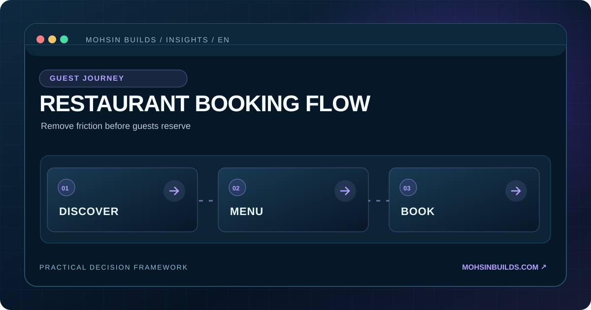

BUYER GUIDE / RESTAURANTS
Is Your Restaurant Website Helping Guests Book?
Nine simple checks can reveal whether your restaurant website makes things easier or harder for potential guests.

Open your restaurant website on a phone and imagine you have never visited before. Can you find the menu, hours, location and booking method without searching? A visually impressive site isn't useful if guests cannot take the next step.
The nine-point restaurant website checklist
- First impression. Is the cuisine, restaurant identity and location obvious immediately?
- Mobile menu. Can guests read current dishes, prices and relevant dietary information without zooming?
- Reservation action. Is booking, calling or messaging clearly available? If reservations aren't supported, is that explicit?
- Opening hours. Are regular and holiday hours accurate and consistent with your Google Business Profile?
- Location. Is the full address visible as text, with useful directions and parking details where relevant?
- Mobile usability. Can someone use buttons and forms easily with one thumb on a smaller screen?
- Honest photography. Are the food and dining environment shown with accurate, current photos?
- Booking flow. Have you tested confirmation messages, notifications and what happens when no tables are available?
- Trust and accessibility. Is important information readable, keyboard accessible and unobstructed by pop-ups?
What should you improve first?
Prioritize whatever blocks a customer from taking the next action. Usually that means fixing a missing reservation link, broken form, unreadable menu, unclear hours or poor mobile layout before investing in a full redesign.
| Observed issue | Potential improvement |
|---|---|
| Guests repeatedly ask for the menu | Make current mobile-readable menus prominent |
| Bookings are missed | Verify form delivery, confirmations and staff notifications |
| Site only works well on desktop | Improve responsiveness and tap targets |
| Customers cannot find opening hours | Put accurate hours near relevant actions |
Measure what matters
Measure actual reservation completions, valid inquiries and call actions if your analytics and consent setup support them. Website visits alone are not proof of more customers. Account for seasonal changes and the origin of visitors when comparing results.
Small, dependable improvements can be more useful than buying a complicated booking system that nobody maintains.
A practical 15-minute website test for restaurant owners
Invite someone unfamiliar with the restaurant to use the site on their own phone. Ask them to find the current menu, opening hours, address and reservation method. Avoid giving instructions. Watch where they hesitate, what information is missing and whether any button fails. Note the affected page rather than assuming that an entirely new site is necessary.
Which fixes matter most?
Start with broken reservation links, wrong hours, unreadable menus and missing contact information. Then address confusing navigation and slow mobile images. Visual decoration should come after guests can accomplish their main tasks reliably. Verify any external booking service and confirm that staff notifications work.
Frequently asked questions
Does every restaurant need online reservations?
No. A reliable phone or message-based booking process can be appropriate. Make the actual method easy to find and avoid promising automatic confirmation when staff review is required.
Should a restaurant use a PDF-only menu?
A PDF can be useful as a supplementary download, but a well-structured mobile HTML menu may be easier to read, navigate and update. Check the experience with real devices and assistive technology where possible.
For project planning see our website budgeting guide.
Want a clearer path from visitor to reservation?
Share your website and booking method. Mohsin Builds can discuss the highest-impact improvements before proposing a redesign.
Discuss my restaurant site ↗